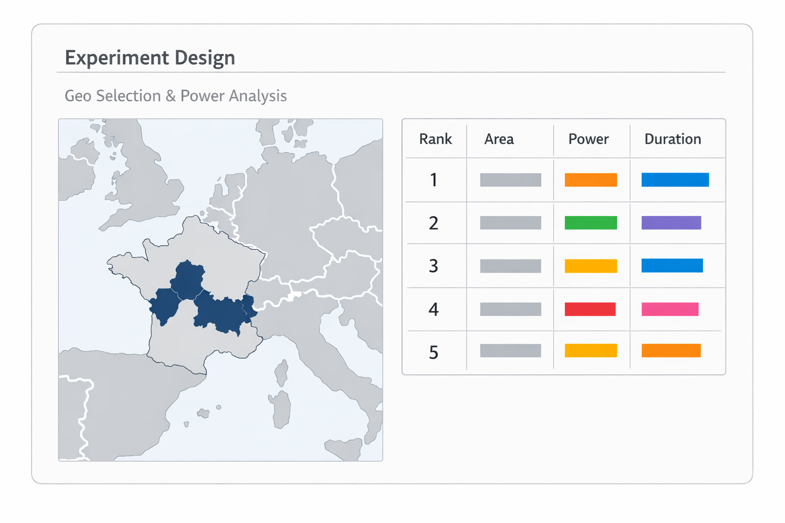
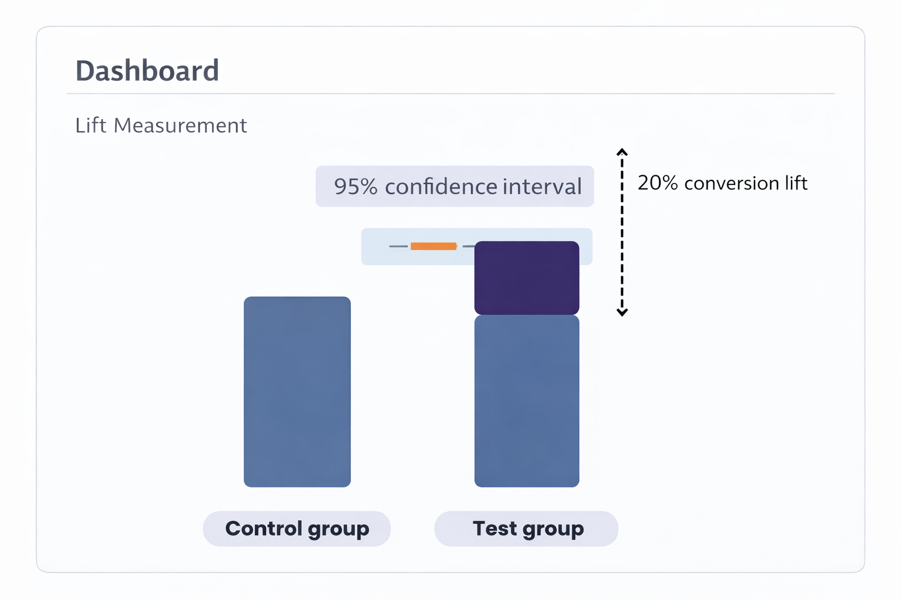
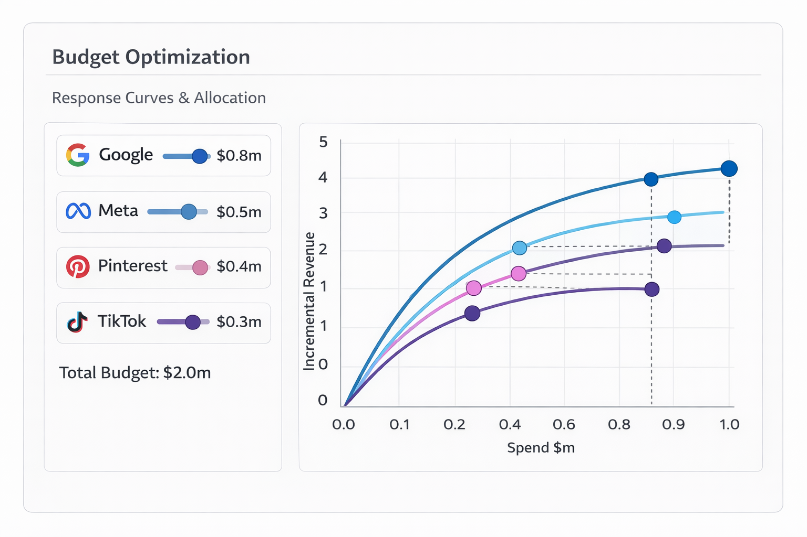

Measurement is shifting from attribution to incrementality. Marketing teams are expected to prove causal impact, not just report conversions.
Conversion lift tools offered by major platforms exist—but they are limited in scope, restricted to a single channel, and rarely provide the depth needed to guide real budget allocation decisions.
Geo-based incrementality testing solves this problem. It measures true causal impact across markets and provides reliable estimates of marginal return.
But in practice, geo lift experiments are difficult to run.
They require complex experimental design, statistical power analysis, strict geo compliance, continuous monitoring, and specialized econometric expertise. Most marketing teams do not have the operational bandwidth, and most data scientists are not embedded deeply enough in media execution to run continuous experimentation.

puZzLe is the first platform designed to operationalize geo-based incrementality testing for marketing teams.
It handles the full experimentation lifecycle:
No manual analysis. No custom modeling. No operational overhead.
One platform to design, run, and analyze incrementality experiments across your media channels.

Once you have accumulated incrementality results, puZzLe allows you to translate experimental evidence into actionable budget decisions.
Using observed causal response curves, puZzLe estimates the allocation of budget across channels and markets that maximizes incremental revenue under your business constraints.
This enables you to move beyond attribution-based optimization and allocate media investment based on proven causal return.

See how puZzLe can help you measure true incrementality and optimize your media investment with confidence.
Schedule a Demo